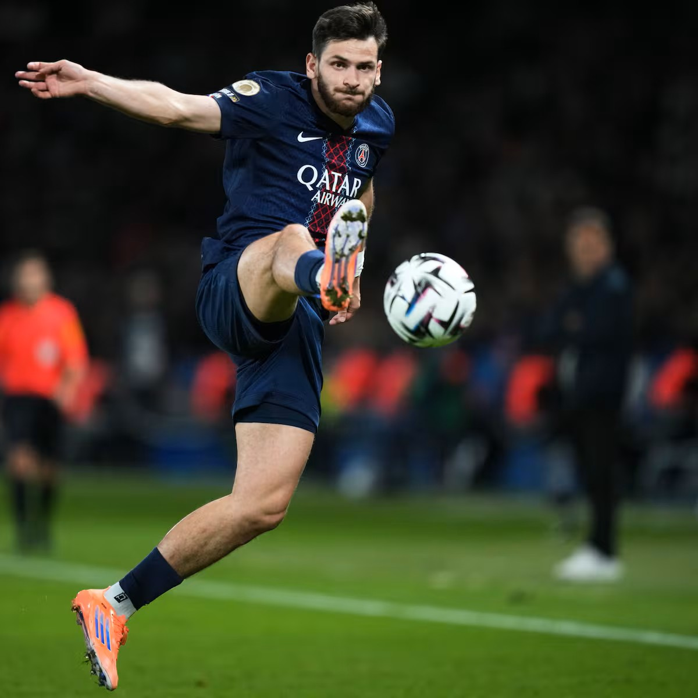

1. Orígenes y Raíces
Khvicha nació el 12 de febrero de 2001 en Tiflis, Georgia. Creció en una familia de gran tradición futbolística; su padre, Badri Kvaratskhelia, fue un futbolista profesional e internacional con la selección de Azerbaiyán. Desde muy niño, Khvicha estuvo rodeado de balones y desarrolló su pasión en las calles y academias de su país natal.
2. Inicios en el Fútbol
Se formó en las categorías inferiores del Dinamo Tiflis, el club más laureado de Georgia. Debutó con el primer equipo en 2017 a los 16 años, mostrando de inmediato un talento sobrehumano para el regate en el uno contra uno, la potencia física y el disparo con ambas piernas.
3. Clubes Anteriores
- Dinamo Tiflis (2017 - 2018): Club donde debutó profesionalmente.
- Rustavi (2018): Breve paso en la liga georgiana antes de dar el salto al extranjero.
- Lokomotiv Moscú (2019): Cedido a la Premier League Rusa, donde ganó la Copa de Rusia.
- Rubin Kazán (2019 - 2022): Se consolidó como uno de los mejores jóvenes de Europa Oriental, ganando fama por sus regates diabólicos.
- Dinamo Batumi (2022): Regreso temporal a Georgia debido a regulaciones especiales de la FIFA.
- S. S. C. Napoli (2022 - 2025): Su explosión mundial. Ganó la Serie A (Scudetto) y fue apodado por los aficionados como "Kvaradona".
4. Club Actual y Logros
Actualmente compite al máximo nivel con el París Saint-Germain (PSG) en la Ligue 1 de Francia.
Principales Títulos y Reconocimientos:
- UEFA Champions League: Campeón del torneo continental.
- Serie A (Italia): Campeón con el Nápoles.
- Ligue 1 (Francia): Campeón con el París Saint-Germain.
- Futbolista del Año en Georgia: Elegido en 5 ocasiones como el mejor jugador de su país.
- Selección de Georgia: Ha disputado más de 50 partidos internacionales y superado los 20 goles, liderando a su país a torneos históricos.